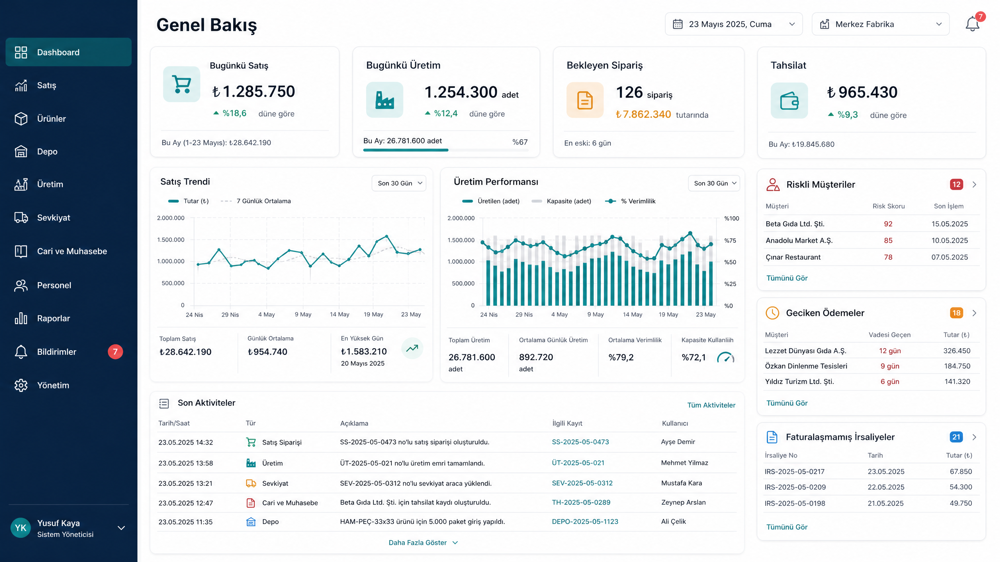

Tasarım Dili ve Standartlar

Renk ve Bileşenler
Derin lacivert navigasyon ve teal ana aksiyonlar ile kurumsal odak sağlanır.
Amber (bekleyen) ve kırmızı (kritik) renkler, metin ve ikonlarla desteklenerek durumları netleştirir.
Standart bileşenler: Data table, durum rozetleri, modal, drawer ve timeline.
Ortak Ekran Davranışı
Her detay ekranı özet bilgiyi, mevcut durumu, bağlı belgeleri ve aktivite geçmişini aynı zihinsel model içinde gösterir.
Kritik işlemler, işlem sonucunu ve stok/cari etkisini gösteren onay pencereleri ile güvence altına alınır.